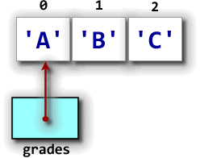
An array variable and the actual array where the array elements are stored are two different things, as this picture, which illustrates the memory layout of the code fragment below, shows. In this example, the array variable,grades, refers to the
actual array elements 'A', 'B' and 'C', located "somewhere else"
in memory.
This "somewhere else" is an area known as the heap,
and it's the same memory area used to store objects. The array variable
grades is stored in a different area of memory, and contains
a reference to the actual array.
When you use grades as part of a subscripted variable name,
like this:
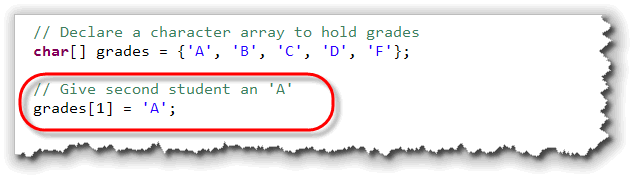
you are not modifying the variablegrades, but are
changing the value in the second element of the actual array
elements that grades "points to", or, more technically,
refers to.
Although high-level languages are designed to hide many of the lower-level details like this, you can't really escape knowing about this difference between value types and reference types, and the implications that this language-design decision has for you as a programmer.
We've touched on these concepts earlier in the course, (back in Section 3.5—Objects and Color), but let's review some of that material once again with a focus on array types. Having a clear idea about how data is stored in memory will help you when you start working with array-handling methods.
Value and Reference Types
Back in Chapter 1, you learned a little bit about how computers use memory. As we studied the history of computing, for instance, you learned about John von Neumann's development of the stored program concept: that memory could be partitioned, with one part storing data, and another part storing program instructions.
Modern computers take this idea even further. When a program is running, we can divide its data section up into three general categories:
- The static storage area. When a program runs, there are some data elements that can be created and stored in memory for the entire time that the program is running. Constant data elements, such as string literals are one example of this kind of data. Variables shared throughout the entire program are another.
 The stack-based storage area. When you create
a local variable inside a method, the memory used to store that
variable isn't set aside until the method is called
and the local variable declaration is encountered. That means
that if a particular method isn't called when you run your
program, no memory is set aside for those variables.
The stack-based storage area. When you create
a local variable inside a method, the memory used to store that
variable isn't set aside until the method is called
and the local variable declaration is encountered. That means
that if a particular method isn't called when you run your
program, no memory is set aside for those variables.
Stack-based variables are stored right next to each other in memory. This is called contiguous storage. One way to think of contiguous storage is to picture a stack of dinner plates in a restaurant like the Souplanation. (This is where the name stack came from.)
When you create a local variable inside a method, the memory for the variable is set aside on "the top" of the stack. When the method is finished, all of the variables placed on the stack are automatically removed, so the memory can be used for other purposes.- The heap or "free-store"-based storage area.
Stack-based storage is very efficient, but it has some real
limitations. Because elements are "stacked" on top of each
other, all of the elements need to be pretty much the same
size, (or some multiple of that size). Also, since memory
used for local variables is automatically reclaimed whenever
a method ends, stack-based variables don't work very well
for sharing information between methods.
The third area of memory, the heap, is used to get around these limitations. The heap is used to store the "data part" of reference types, including objects and arrays.
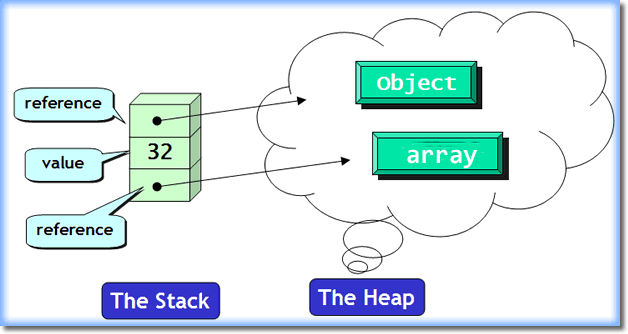
Reference Types
Reference type variables, (which include everything in Java except
for the primitive numeric types along with char and
boolean types),
are divided into two pieces:
- the reference (object or array) variable
- the actual object or array itself
The object or array variable is the variable that you deal with
in your program; this is the part that you provide an
identifier for. The variable (such as the array variable a
shown below) may be stored on the stack or in the static storage area:
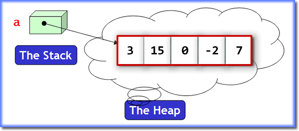
The actual object or the array itself is unnamed, and is stored on the heap. Heap based variables are created by using thenew operator, which allocates
the necessary memory from the heap. In the case of an object
type, the constructor is then run to initialize that
particular instance. In the case of an array the array
constructor is used to determine the number of elements to
allocate on the heap; it doesn't initialize those elements.
When the new operator and the constructor are
finished, they store the address in memory where the
new object is located in a hidden variable, and then return a
special code, called a reference that can be used to
locate the item in memory. You can think of a reference as
the valet claim-check you receive in a parking garage.
You use the claim-check to get your car when needed, but you
might not know where it's parked. The valet, however, knows
from the claim-check where your car is located.
It's this reference value that is
stored in the array variable. If the object couldn't be
created, for some reason, the special value null
is stored in the array variable instead.
Assignment
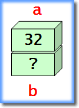
Primitive types, (likeint and char),
are called value types, (as opposed to reference
types, like objects). This just means that a primitive variable
is a "bucket" in memory that contains an actual value.
When you create two primitive variables, like this:
int a = 32, b; // Two independent variables
then each variable is an independent storage area; the
variables a and b are not "linked"
in any way.
Value Assignment
When you use assignment with value types, the result is duplicate, independent copies of the values that the variables contain. Consider this example:
b = a; // Two independent values
When this code is executed, it first makes a copy of the value
stored in the variable a, and then places that
copy in the variable named b:
 This is called a deep copy, and we say that
This is called a deep copy, and we say that
a and b exhibit value semantics.
In Java, only primitive types exhibit value semantics. That's not true of all object-oriented languages. C++, for instance, is designed to allow user-defined types, (classes), to act in the same way by defining a copy constructor and an assignment operator. You'll study this in CS 250, C++ Programming II.
Reference Assignment
As you saw earlier, an object variable, (sometimes called a handle), contains the address of an object, but not the actual object itself.
If you have some code that looks like this:
int[] a = {3, 15, 0, -2, 7};
int[] b = a;
the assignment copies only the address, not the object or
actual array.
The result is that the array variable b refers
to the same array elements as the variable a; the two
variables are aliases, not independent variables:
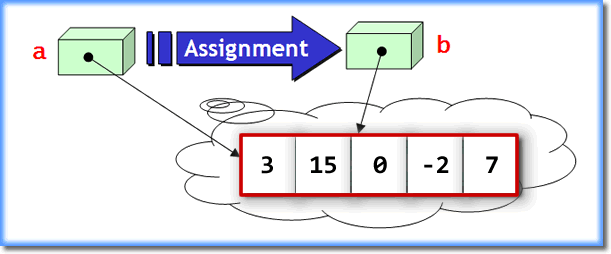
This kind of assignment, where only the address is copied, but not the underlying object or array, is called a shallow copy, and we say that types that exhibit this behavior have reference semantics. In Java, all types other than primitives have reference semantics.With that understanding of the difference between reference and primitive types, let's look at the problem of copying and comparing arrays. We'll look at copying other object types later in the semester.
Making Array Copies
Many times, a shallow copy of an array is good enough; it's certainly more efficient than making a complete copy of all of the array elements every time you need to use the array in a different context.
Sometimes, though, you may want to modify the elements of your
array copy, while leaving the original elements unchanged. To
do that, you need to make a deep copy. (Note that you don't need
to worry about this with String variables, since
the String class is immutable; you can't
change the elements in a String so this sharing
behavior is perfectly safe.
Since the assignment operator only makes a shallow copy, or alias, how do you go about making a deep copy? There are several different ways to do it. (You'll find each of these examples in ArrayExamples.java in this chapter's code folder.)
Method 1: Use a Loop
To copy an array using a loop, actually takes two steps. Before you
can apply the loop, you first have to allocate enough room
to hold the copy's elements, like this:
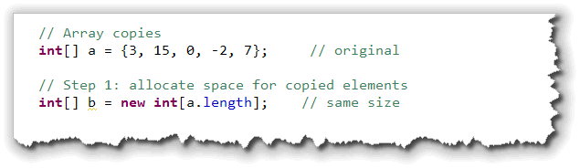
Use thelength of the first array to decide how
many elements the second array should contain.
Once the copy exists, you can use the regular array traversal
algorithm to copy each element from the original to the copy
like this:
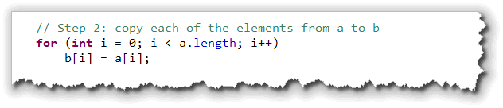
Method 2: Clone the Array
Many reference types, including arrays, have a clone()
method that allows you to both allocate and copy the elements
in one simple step. Here's how you could make a copy of the array using
the clone() method:
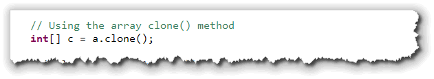
The cloned array will be the same size and contain the same elements in the same order as the original.Method 3: Use System.arraycopy()
The clone() method only works when you want an
exact duplicate of an array. If you want only part of
an array, you can use a loop. This is common when manipulating
portions of images in memory, for instance. Unfortunately, for
large arrays, like those used in multimedia, using a loop is
relatively slow.
The best way to do
this is to use the System.arraycopy() method, which is
written in highly optimized native code as part of the JVM for your
platform. Using System.arraycopy() will almost always
be faster than writing your own loop. (No, I don't know why it's
not called System.arrayCopy().)
Unfortunately, a first look at the method's documentation can
be daunting. System.arraycopy() takes five arguments:
- The name of the source array (copy from here)
- The source element to start with (use 0 to start at the beginning)
- The name of the destination array (copy to here)
- The destination element to start with (use 0 to start at the beginning)
- The number of elements to copy
If you make a mistake in these arguments (if, for instance, the destination array is not large enough to receive the elements you want to copy), then the JVM will throw an exception. Fortunately, when copying an entire array, it's not hard to get them right. Simply do this:
double[] copy = new double[nums.length];
System.arraycopy(nums, 0,
copy, 0,
nums.length);
That wasn't too hard, was it?
Method 4: Using the Arrays Class
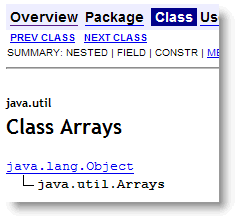
The Arrays class in thejava.util package is a
class that "contains various methods for manipulating arrays,
(such as sorting and searching)", according to the introductory
heading in the JavaDocs.
It's easy to miss this class, because there's also an Array
interface that deals with SQL, and an Array class that
deals with reflection. The one that we want has an "s" on the
end. The copying methods in this class only work with Java 6. You should only
use these methods when you can be sure that your code will only
run on a Java 6 platform. (If you are running ArrayExamples.java
on a pre-Java 6 machine, like some Macs, you'll need to comment-out
the code in this section: from lines 62-80).
The Arrays.copyOf() method is useful, because it allows you to
easily make a copy that is a different size than the original.
If you make the copy larger, then the extra elements are initialized
to 0. If you make the copy smaller, then the extra elements are simply
discarded.

 Here's an example that makes two more array copies,
Here's an example that makes two more array copies, d and
e, using the Arrays.copyOf() method. The array
that d refers to is twice the size of a, while
the array that e refers to is half the size.
If we were to display the contents of each of these arrays
(which you'll see how to do shortly), they would look like this.
Note how d is padded with 0s, and how e is
truncated to two elements (half of 5).
The copyOfRange() Method
The Arrays.copyOf() method allows you to grow or
shrink an existing array, but it doesn't allow you to extract
just a portion in the middle. That's where the copyOfRange()
method comes in. The method takes three parameters:
- The source array that contains the elements you want to copy.
- An initial index. This is the location of the first element to be copied. You can specify the length of the original array (in which case no elements will be copied), but other wise, the starting element must be between 0 and the length.
- An ending index. This works a little like the
substring()method. The ending index is not copied into the output. Unlikesubstring()though, you can specify an ending index larger than the size of the original array. The ending index must be at least as large as the starting index.
There are several ways you can use copyOfRange(). Here
are three examples:
 As you can see:
As you can see:
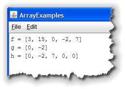
- The first example uses 0 for the starting index and
a.lengthas the ending index, thus copying the entire array. - The second example (
g) usesa.length / 2as the starting index anda.length - 1as the ending index, thus copying two elements from the original array. - The final example uses
a.length / 2as the starting index once again, but sets the second index past the end of the original array. When the new array is created, these additional elements will be filled with 0.
Let me reiterate my earlier warning. This code won't work on pre-Java6 runtimes. That means some Macs, as well as a lot of other machines out in the "real world", especially those running "server-side" code.
Comparing Arrays
How do you tell if two arrays are equal. Let's see. What do you think
this program prints out?
 You should notice:
You should notice:
- The contents of all three arrays (were we to print them) would be identical.
- We can use both
==and!=with array variables.
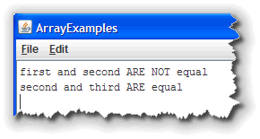
If we run the program, though, the results might not be what you expected. Arrays work the same way thatString variables
do when it comes to comparison. When we print the results, you see
that first is not equals to second,
because the value of the reference (that is, the address of the
actual array elements) is different in each case.
When we compare second and third, though,
we find that they are equal. This is not because
they have the same values in the array elements, but because
both array variables refer to exactly the same actual array.
(Of course, that also means that they both have the same
contents, since they are exactly the same array.)
As with Strings, we are rarely interested in
this kind of "identity" comparison. Most of the time we are interested
in comparing the actual values stored in the array. There are
two ways to do that.
Method 1: Use a Loop
You can use Boolean expressions, if statements and loops
to compare two arrays to see if they are equal. Here's the code to compare
first and second to see if they have
the same values:
 Note that:
Note that:
- First, we need to determine if the two arrays have the same length. If they don't, then they aren't equal.
- Next, we need to traverse the entire array. At each element, we compare the corresponding elements in the two arrays.
Now, what should we do if they match? Well if that's the case, we check the next one. If they don't match, though, we don't have to go any further: the two arrays are not equal.
When this occurs, we set the Boolean flag to false.
Since nothing ever sets it to true again, that's all we really
need. However, since there's no point in comparing any
of the remaining elements, you can use the break
statement to exit the loop when that's determined.
Method 2: Use Arrays.equals()
This code is not difficult, but it is kind of annoying to have to do this each time you want to compare two arrays. Isn't there an easier way?
Yes, there is!
The Arrays class has an equals() method
that works pretty much like String.equals(). Here's
the same comparison using this method:
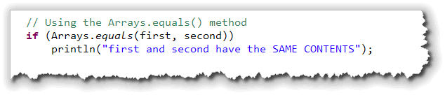
Unlike the copyOf() method, the equals() method
will work on earlier versions of Java.

Array Copy and Compare Summary
- Arrays, like objects, are reference types. That means that the array variable is used to retrieve the actual array elements, which are stored on the runtime heap.
- When you assign one array variable to another, only the reference is copied, not the actual array elements. This is called a shallow copy and both array variables refer to exactly the same array. We can say that they are aliases for each other.
- A deep copy is a copy of an array that includes copies of each of the array elements, not a copy of the array reference.
- When you need to make a deep copy of an array, you can first allocate a second array that is exactly the same size and then use a loop to copy each element from the original array to the copy. This can be a little slow.
- The
System.arraycopy()method will perform an optimized copy of the elements from one array to another. You must first allocate the destination (copy) array, but then the duplication of elements goes very quickly. You may also copy a portion of an array, so both arrays do not need to be the same size. - All arrays have a
clone()method which will make an exact duplicate of the entire array. When you useclone()you do not need to allocate the destination array first. You cannot useclone()to copy a portion of an array. - Starting in Java 6, the
java.util.Arraysclass added several convenience methods for quickly and efficiently performing deep array copies. ThecopyOf()methods will allow you to copy, grow and shrink an existing array, while thecopyOfRange()methods allow you to create a new array from a portion of an existing array. Neither of these work in Java previous to version 6. - To compare two arrays you should not use
==because that compares the reference values; in other words it tells you if two array variables refer to the same actual array. - To see if two arrays have the same contents you can use
a loop, comparing each individual element, or you can use
the
java.util.Arrays.equals()method. UnlikeString equals(), this is astaticmethod that requires you to pass both arrays as arguments to the method.